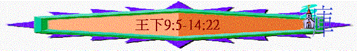

|
屬神國度的衰落 |
|||
|
二王—行神的旨意得堅固
|
二國—不專心順服終分裂
|
二先知—神能力彰顯仍剛硬
|
二結局—繼續行惡至終亡國
|
|
王上1-10 |
王上11-16 |
王上17-王下9:4 |
王下9:5-25:30 |
四.二結局----繼續行惡至終亡國(王下9:5-25:30)
～由本段開始，我們看到南北二國逐漸走向滅亡的結局
～而他們的敵人----亞蘭、埃及、亞述及後期的巴比倫也相繼攻擊他們，但他們仍繼續行惡，至終神將他們交在外邦人手中
1.亞哈家的結局 (王下9:5-10:36)
「耶和華對他說：「你回去，從曠野往大馬色去。到了那裡，就要膏哈薛作亞蘭王，又膏寧示的孫子耶戶作以色列王，並膏亞伯米何拉人沙法的兒子以利沙作先知接續你。」王上19:15-16
「耶和華說：『我必使災禍臨到你，將你除盡。凡屬你的男丁，無論困住的、自由的，都從以色列中剪除。我必使你的家像尼八的兒子耶羅波安的家，又像亞希雅的兒子巴沙的家；因為你惹我發怒，又使以色列人陷在罪裡。』論到耶洗別，耶和華也說：『狗在耶斯列的外郭必吃耶洗別的肉。凡屬亞哈的人，死在城中的必被狗吃，死在田野的必被空中的鳥吃。』」」王上21:21-24
～神很早已預言耶戶會作以色列的王，並命定亞哈家會遭審判
A.耶戶被膏立作工
a.被膏立
「到了那裡，看見眾軍長都坐著，就說：「將軍哪，我有話對你說。」耶戶說：「我們眾人裡，你要對那一個說呢？」回答說：「將軍哪，我要對你說。」耶戶就起來，進了屋子，少年人將膏油倒在他頭上，對他說：「耶和華以色列的神如此說：『我膏你作耶和華民以色列的王。」王下9:5-6
b.有使命----滅亞哈家
「你要擊殺你主人亞哈的全家，我好在耶洗別身上伸我僕人眾先知和耶和華一切僕人流血的冤。」9:7
～因亞哈家行神眼中惡事，耶洗別殺了神的先知，所以神要在亞哈家中施行刑罰
(1)關乎男丁
「亞哈全家必都滅亡，凡屬亞哈的男丁，無論是困住的、自由的，我必從以色列中剪除，使亞哈的家像尼八兒子耶羅波安的家，又像亞希雅兒子巴沙的家。」9:8-9
「因此，我必使災禍臨到耶羅波安的家，將屬耶羅波安的男丁，無論困住的、自由的都從以色列中剪除，必除盡耶羅波安的家，如人除盡糞土一般。」王上14:10
「耶和華的話臨到哈拿尼的兒子耶戶，責備巴沙說：「我既從塵埃中提拔你，立你作我民以色列的君，你竟行耶羅波安所行的道，使我民以色列陷在罪裡，惹我發怒，我必除盡你和你的家，使你的家像尼八的兒子耶羅波安的家一樣。」王上16:1-3
～亞哈家的男丁必像耶羅波安及巴沙家的男丁一樣，他們必定被殺
(2)關乎耶洗別
「耶洗別必在耶斯列田裡被狗所吃，無人葬埋。』」說完了，少年人就開門逃跑了。」9:10
c.被擁戴
「他們說：「這是假話，你據實地告訴我們。」回答說：「他如此如此對我說。他說：『耶和華如此說：我膏你作以色列王。』」他們就急忙各將自己的衣服鋪在上層臺階，使耶戶坐在其上；他們吹角，說：「耶戶作王了！」」王下9:12-13
「押沙龍打發探子走遍以色列各支派，說：「你們一聽見角聲就說：『押沙龍在希伯崙作王了！』」撒下15:10
～吹角是當時擁立君王的一個儀式
B.耶戶行神的審判
a.殺亞哈兒子----以色列王約蘭
「但約蘭王回到耶斯列，醫治與亞蘭王哈薛打仗所受的傷。耶戶說：「若合你們的意思，就不容人逃出城往耶斯列報信去。」於是耶戶坐車往耶斯列去，因為約蘭病臥在那裡。猶大王亞哈謝已經下去看望他。」王下9:15-16
「約蘭見耶戶就說：「耶戶啊，平安嗎？」耶戶說：「你母親耶洗別的淫行邪術這樣多，焉能平安呢？」約蘭就轉車逃跑，對亞哈謝說：「亞哈謝啊，反了！」耶戶開滿了弓，射中約蘭的脊背，箭從心窩穿出，約蘭就仆倒在車上。耶戶對他的軍長畢甲說：「你把他拋在耶斯列人拿伯的田間。你當追想，你我一同坐車跟隨他父亞哈的時候，耶和華對亞哈所說的預言，說：『我昨日看見拿伯的血和他眾子的血，我必在這塊田上報應你。』這是耶和華說的，現在你要照著耶和華的話，把他拋在這田間。」
」9:22-26
～從前亞哈貪求拿伯的葡萄園，耶洗別命人陷害拿伯，令他被石頭打死，神要追討亞哈家的罪，約蘭被殺，他的屍體被拋在拿伯的田間
b.殺亞哈家的同盟----猶大王亞哈謝
「猶大王亞哈謝見這光景，就從園亭之路逃跑。耶戶追趕他，說：「把這人也殺在車上。」到了靠近以伯蓮的姑珥坡上擊傷了他。他逃到米吉多，就死在那裡。他的臣僕用車將他的屍首送到耶路撒冷，葬在大衛城他自己的墳墓裡，與他列祖同葬。」王下9:27-28
「亞哈謝登基的時候年四十二歲（列王下八章二十六節是二十二歲），在耶路撒冷作王一年。他母親名叫亞他利雅，是暗利的孫女。亞哈謝也行亞哈家的道；因為他母親給他主謀，使他行惡。他行耶和華眼中看為惡的事，像亞哈家一樣；因他父親死後有亞哈家的人給他主謀，以致敗壞。他聽從亞哈家的計謀，同以色列王亞哈的兒子約蘭往基列的拉末去，與亞蘭王哈薛爭戰；亞蘭人打傷了約蘭。」代下22:2-5
「亞哈謝去見約蘭就被害了，這是出乎神；因為他到了，就同約蘭出去攻擊寧示的孫子耶戶。這耶戶是耶和華所膏、使他剪除亞哈家的。」代下22:7
～約沙法的兒子是約蘭，約蘭的兒子是亞哈謝，他作猶大王，但他母親是亞哈的女兒，他和亞哈家有密切關係，也行亞哈家的惡，他也與以色列王約蘭結盟，在這次追討亞哈家罪行的事件中，猶大王亞哈謝也受牽連，他也被耶戶所殺，而此事也是出於神的，是神默許的
c.殺亞哈的妻子----耶洗別
「耶戶進門的時候，耶洗別說：「殺主人的心利啊，平安嗎？」耶戶抬頭向窗戶觀看，說：「誰順從我？」有兩三個太監從窗戶往外看他。耶戶說：「把他扔下來！」他們就把他扔下來。他的血濺在牆上和馬上；於是把他踐踏了。耶戶進去，吃了喝了，吩咐說：「你們把這被咒詛的婦人葬埋了，因為他是王的女兒。」」王下9:31-34
「他們回去告訴耶戶，耶戶說：「這正應驗耶和華藉他僕人提斯比人以利亞所說的話，說：『在耶斯列田間，狗必吃耶洗別的肉；耶洗別的屍首必在耶斯列田間如同糞土，甚至人不能說這是耶洗別。』」」9:36-37
d.殺亞哈的眾子
(1)恐嚇首領
「亞哈有七十個兒子在撒瑪利亞。耶戶寫信送到撒瑪利亞，通知耶斯列的首領，就是長老和教養亞哈眾子的人，說：「你們那裡既有你們主人的眾子和車馬、器械、堅固城，接了這信，就可以在你們主人的眾子中選擇一個賢能合宜的，使他坐他父親的位，你們也可以為你們主人的家爭戰。」他們卻甚懼怕，彼此說：「二王在他面前尚且站立不住，我們怎能站得住呢？」家宰、邑宰，和長老，並教養眾子的人，打發人去見耶戶，說：「我們是你的僕人，凡你所吩咐我們的都必遵行，我們不立誰作王，你看怎樣好就怎樣行。」」10:1-5
(2)要求殺子
「耶戶又給他們寫信說：「你們若歸順我，聽從我的話，明日這時候，要將你們主人眾子的首級帶到耶斯列來見我。」那時王的兒子七十人都住在教養他們那城中的尊貴人家裡。信一到，他們就把王的七十個兒子殺了，將首級裝在筐裡，送到在耶斯列的耶戶那裡。有使者來告訴耶戶說：「他們將王眾子的首級送來了。」耶戶說：「將首級在城門口堆作兩堆，擱到明日。」」10:6-8
(3)神話應驗
「由此可知，耶和華指著亞哈家所說的話一句沒有落空，因為耶和華藉他僕人以利亞所說的話都成就了。」10:10
e.殺亞哈謝的兄弟
「耶戶起身往撒瑪利亞去。在路上、牧人剪羊毛之處，遇見猶大王亞哈謝的弟兄，問他們說：「你們是誰？」回答說：「我們是亞哈謝的弟兄，現在下去要問王和太后的眾子安。」耶戶吩咐說：「活捉他們！」跟從的人就活捉了他們，將他們殺在剪羊毛之處的坑邊，共四十二人，沒有留下一個。」10:12-14
「耶戶討亞哈家罪的時候，遇見猶大的眾首領和亞哈謝的眾姪子服事亞哈謝，就把他們都殺了。」代下22:8
f.殺盡亞哈家
「耶戶說：「你和我同去，看我為耶和華怎樣熱心」；於是請他坐在車上，到了撒瑪利亞，就把撒瑪利亞的亞哈家剩下的人都殺了，直到滅盡，正如耶和華對以利亞所說的。」10:16-17
g.殺拜巴力者
「耶戶招聚眾民，對他們說：「亞哈事奉巴力還冷淡，耶戶卻更熱心。現在我要給巴力獻大祭。應當叫巴力的眾先知和一切拜巴力的人，並巴力的眾祭司，都到我這裡來，不可缺少一個；凡不來的必不得活。」耶戶這樣行，是用詭計要殺盡拜巴力的人。耶戶說：「要為巴力宣告嚴肅會！」於是宣告了。」10:18-20
「耶戶獻完了燔祭，就出來吩咐護衛兵和眾軍長說：「你們進去殺他們，不容一人出來！」護衛兵和軍長就用刀殺他們，將屍首拋出去，便到巴力廟的城去了，將巴力廟中的柱像都拿出來燒了；毀壞了巴力柱像，拆毀了巴力廟作為廁所，直到今日。這樣，耶戶在以色列中滅了巴力。」10:25-28
C.耶戶不遵守神的話
a.善行
「耶和華對耶戶說：「因你辦好我眼中看為正的事，照我的心意待亞哈家，你的子孫必接續你坐以色列的國位，直到四代。」」10:30
b.惡行
「只是耶戶不離開尼八的兒子耶羅波安使以色列人陷在罪裡的那罪，就是拜伯特利和但的金牛犢。」10:29
「只是耶戶不盡心遵守耶和華以色列神的律法，不離開耶羅波安使以色列人陷在罪裡的那罪。」10:31
c.受罰
(1)被亞蘭攻擊
「在那些日子，耶和華才割裂以色列國，使哈薛攻擊以色列的境界，」10:32
(2)國位不長久
「只是耶戶不盡心遵守耶和華以色列神的律法，不離開耶羅波安使以色列人陷在罪裡的那罪。」10:31
「耶戶與他列祖同睡，葬在撒瑪利亞；他兒子約哈斯接續他作王。」10:35
2.南北國的衰落(11-16)
～此段開始，南北國開始慢慢衰落起來，而他們也屢次受到列邦攻擊，他們的地土、財物、聖殿的物件、人民也多有被奪去及擄去
～在國勢不及以前下，而很多王仍不悔改歸向神
A.南國約阿施王朝
a.作猶大王
(1)被收藏
「亞哈謝的母親亞他利雅見他兒子死了，就起來剿滅王室。但約蘭王的女兒，亞哈謝的妹子約示巴，將亞哈謝的兒子約阿施從那被殺的王子中偷出來，把他和他的乳母都藏在臥房裡，躲避亞他利雅，免得被殺。約阿施和他的乳母藏在耶和華的殿裡六年；亞他利雅篡了國位。」11:1-3
「他行以色列諸王所行的，與亞哈家一樣；因為他娶了亞哈的女兒為妻，行耶和華眼中看為惡的事。」8:18
～亞他利雅是暗利的孫女，即亞哈的女兒，她剿滅王室篡奪國位
(2)被保護
「第七年，耶何耶大打發人叫迦利人（或作：親兵）和護衛兵的眾百夫長來，領他們進了耶和華的殿，與他們立約，使他們在耶和華殿裡起誓，又將王的兒子指給他們看，」11:4
「各人手拿兵器，四圍護衛王。凡擅入你們班次的必當治死，王出入的時候，你們當跟隨他。」」11:8
(3)被膏立
「祭司領王子出來，給他戴上冠冕，將律法書交給他，膏他作王；眾人就拍掌說：「願王萬歲！」」11:12
「他登了國位，就要將祭司利未人面前的這律法書，為自己抄錄一本，」申17:18
(4)殺叛者
「祭司耶何耶大吩咐管轄軍兵的百夫長說：「將他趕出班外，凡跟隨他的必用刀殺死！」因為祭司說「不可在耶和華殿裡殺他」，眾兵就閃開讓他去；他從馬路上王宮去，便在那裡被殺。」11:15-16
(5)得王位
「耶何耶大使王和民與耶和華立約，作耶和華的民；又使王與民立約。」11:17
「約阿施登基的時候年方七歲。」11:21
b.行正的事
(1)祭司指導
「耶戶第七年，約阿施登基，在耶路撒冷作王四十年。他母親名叫西比亞，是別是巴人。約阿施在祭司耶何耶大教訓他的時候，就行耶和華眼中看為正的事；只是邱壇還沒有廢去，百姓仍在那裡獻祭燒香。」12:1-3
～約阿施得耶何耶大指導，他行正的事，但仍未廢除在聖殿以外的邱壇
(2)修茸聖殿
(A)交托給祭司處理
(a)收集銀子
「約阿施對眾祭司說：「凡奉到耶和華殿分別為聖之物所值通用的銀子，或各人當納的身價，或樂意奉到耶和華殿的銀子，」12:4
(b)修理聖殿
「你們當從所認識的人收了來，修理殿的一切破壞之處。」12:5
(c)至終失職
「無奈到了約阿施王二十三年，祭司仍未修理殿的破壞之處。」12:6
(B)交托其他人處理
(A)百姓自由奉獻
「祭司耶何耶大取了一個櫃子，在櫃蓋上鑽了一個窟窿，放於壇旁，在進耶和華殿的右邊；守門的祭司將奉到耶和華殿的一切銀子投在櫃裡。」12:9
(B)工人誠實辦事
「把所平的銀子交給督工的，就是耶和華殿裡辦事的人；他們把銀子轉交修理耶和華殿的木匠和工人，」12:11
「且將銀子交給辦事的人轉交做工的人，不與他們算賬，因為他們辦事誠實。惟有贖愆祭、贖罪祭的銀子沒有奉到耶和華的殿，都歸祭司。」12:15-16
c.行惡的事
(1)離棄真神
「耶何耶大死後，猶大的眾首領來朝拜王；王就聽從他們。他們離棄耶和華他們列祖神的殿，去事奉亞舍拉和偶像；因他們這罪，就有忿怒臨到猶大和耶路撒冷。」代下24:17-18
(2)殺害先知
「那時，神的靈感動祭司耶何耶大的兒子撒迦利亞，他就站在上面對民說：「神如此說：你們為何干犯耶和華的誡命，以致不得亨通呢？因為你們離棄耶和華，所以他也離棄你們。」眾民同心謀害撒迦利亞，就照王的吩咐，在耶和華殿的院內用石頭打死他。這樣，約阿施王不想念撒迦利亞的父親耶何耶大向自己所施的恩，殺了他的兒子。撒迦利亞臨死的時候說：「願耶和華鑒察伸冤！」」代下24:20-22
d.遭神管教
(1)外敵入侵
「那時，亞蘭王哈薛上來攻打迦特，攻取了，就定意上來攻打耶路撒冷。猶大王約阿施將他列祖猶大王約沙法、約蘭、亞哈謝所分別為聖的物和自己所分別為聖的物，並耶和華殿與王宮府庫裡所有的金子都送給亞蘭王哈薛；哈薛就不上耶路撒冷來了。」王下12:17-18
「亞蘭的軍兵雖來了一小隊，耶和華卻將大隊的軍兵交在他們手裡，是因猶大人離棄耶和華他們列祖的神，所以藉亞蘭人懲罰約阿施。」代下24:24
(2)王終被殺
「約阿施的臣僕起來背叛，在下悉拉的米羅宮那裡將他殺了。殺他的那臣僕就是示米押的兒子約撒甲和朔默的兒子約薩拔。眾人將他葬在大衛城他列祖的墳地裡。他兒子亞瑪謝接續他作王。」王下12:20-21
「亞蘭人離開約阿施的時候，他患重病；臣僕背叛他，要報祭司耶何耶大兒子流血之仇，殺他在床上，葬他在大衛城，只是不葬在列王的墳墓裡。」代下24:25
B.北國約哈斯王朝
a.王的惡行
「猶大王亞哈謝的兒子約阿施二十三年，耶戶的兒子約哈斯在撒瑪利亞登基作以色列王十七年。約哈斯行耶和華眼中看為惡的事，效法尼八的兒子耶羅波安使以色列人陷在罪裡的那罪，總不離開。」王下13:1-2
～耶戶的兒子----約哈斯作以色列王，但他仍行神眼中看為惡的事
b.外敵欺壓
「於是，耶和華的怒氣向以色列人發作，將他們屢次交在亞蘭王哈薛和他兒子便哈達的手裡。」13:3
c.王的懇求
「約哈斯懇求耶和華，耶和華就應允他，因為見以色列人所受亞蘭王的欺壓。耶和華賜給以色列人一位拯救者，使他們脫離亞蘭人的手；於是以色列人仍舊安居在家裡。」13:4-5
d.惡的延續
「然而他們不離開耶羅波安家使以色列人陷在罪裡的那罪，仍然去行，並且在撒瑪利亞留下亞舍拉。」13:6
～亞舍拉是外邦人拜的女神，可能是懷了孕的母神，
e.外敵踐踏
「亞蘭王滅絕約哈斯的民，踐踏他們如禾場上的塵沙，只給約哈斯留下五十馬兵，十輛戰車，一萬步兵。」13:7
C.北國約阿施王朝
a.王的惡事
「猶大王約阿施三十七年，約哈斯的兒子約阿施在撒瑪利亞登基作以色列王十六年。他行耶和華眼中看為惡的事，不離開尼八的兒子耶羅波安使以色列人陷在罪裡的一切罪，仍然去行。」13:10-11
b.神僕逝去
(1)患病
「以利沙得了必死的病，以色列王約阿施下來看他，伏在他臉上哭泣，說：「我父啊！我父啊！以色列的戰車馬兵啊！」」13:14
～約阿施見到以利沙得了必死的病，他在以利沙面前哭泣，他可能怕失去國家的保障
(2)吩咐
「以利沙對他說：「你取弓箭來。」王就取了弓箭來；又對以色列王說：「你用手拿弓。」王就用手拿弓。以利沙按手在王的手上，說：「你開朝東的窗戶。」他就開了。以利沙說：「射箭吧！」他就射箭。以利沙說：「這是耶和華的得勝箭，就是戰勝亞蘭人的箭；因為你必在亞弗攻打亞蘭人，直到滅盡他們。」」13:15-17
～以利沙要約阿施射出得勝的箭，是戰勝亞蘭的箭，也叫他將餘的箭在地上打
(3)表徵
「以利沙又說：「取幾枝箭來。」他就取了來。以利沙說：「打地吧！」他打了三次，便止住了。神人向他發怒，說：「應當擊打五六次，就能攻打亞蘭人直到滅盡；現在只能打敗亞蘭人三次。」」13:18-19
～以利沙要求王將箭打在地，王知道箭是代表得勝，代表向亞蘭人攻擊，他也知道神的心意是要滅盡亞蘭人，但他只打了三次，似乎未有滅盡的決心或信心，而13:25也顥示他收回了城，就停了起來，沒有照神心意滅盡亞蘭人；所以最終只能打敗亞蘭人三次。
(4)離世
「以利沙死了，人將他葬埋。到了新年，有一群摩押人犯境，有人正葬死人，忽然看見一群人，就把死人拋在以利沙的墳墓裡，一碰著以利沙的骸骨，死人就復活，站起來了。」13:20-21
c.未能滅盡
「耶和華卻因與亞伯拉罕、以撒、雅各所立的約，仍施恩給以色列人，憐恤他們，眷顧他們，不肯滅盡他們，尚未趕逐他們離開自己面前。」13:23
「從前哈薛和約阿施的父親約哈斯爭戰，攻取了些城邑，現在約哈斯的兒子約阿施三次打敗哈薛的兒子便哈達，就收回了以色列的城邑。13:25
D.南國亞瑪謝王朝
a.王的善行
(1)行正直的事
「以色列王約哈斯的兒子約阿施第二年，猶大王約阿施的兒子亞瑪謝登基。他登基的時候年二十五歲，在耶路撒冷作王二十九年。他母親名叫約耶但，是耶路撒冷人。亞瑪謝行耶和華眼中看為正的事，但不如他祖大衛，乃效法他父約阿施一切所行的；只是邱壇還沒有廢去，百姓仍在那裡獻祭燒香。」14:1-4
～亞瑪謝行神眼中看為正的事，但不如他祖大衛
(2)行公義的事
「國一堅定，就把殺他父王的臣僕殺了，卻沒有治死殺王之人的兒子，是照摩西律法書上耶和華所吩咐的說：「不可因子殺父，也不可因父殺子，各人要為本身的罪而死。」」14:5-6
b.王的惡事
(1)尋求偶像
「亞瑪謝在鹽谷殺了以東人一萬，又攻取了西拉，改名叫約帖，直到今日。」14:7
「亞瑪謝殺了以東人回來，就把西珥的神像帶回，立為自己的神，在他面前叩拜燒香。」代下25:14
(2)不聽勸戒
「先知與王說話的時候，王對他說：「誰立你作王的謀士呢？你住口吧！為何找打呢？」先知就止住了，又說：「你行這事，不聽從我的勸戒，我知道神定意要滅你。」」代下25:16
(3)心高氣傲
「那時，亞瑪謝差遣使者去見耶戶的孫子約哈斯的兒子以色列王約阿施，說：「你來，我們二人相見於戰場。」以色列王約阿施差遣使者去見猶大王亞瑪謝，說：「利巴嫩的蒺藜差遣使者去見利巴嫩的香柏樹，說：將你的女兒給我兒子為妻。後來利巴嫩有一個野獸經過，把蒺藜踐踏了。你打敗了以東人就心高氣傲，你以此為榮耀，在家裡安居就罷了，為何要惹禍，使自己和猶大國一同敗亡呢？」」14:8-10
～蒺藜代表南國，香柏樹代表北國
～亞瑪謝得勝以東後，心高氣傲起來，要與北國交戰
c.神的管教
(1)敗陣
「猶大人敗在以色列人面前，各自逃回家裡去了。以色列王約阿施在伯示麥擒住亞哈謝的孫子、約阿施的兒子猶大王亞瑪謝，就來到耶路撒冷，拆毀耶路撒冷的城牆，從以法蓮門直到角門共四百肘，」王下14:12-14
「亞瑪謝卻不肯聽從。這是出乎神，好將他們交在敵人手裡，因為他們尋求以東的神。」代下25:20
(2)被殺
「耶路撒冷有人背叛亞瑪謝，他就逃到拉吉；叛黨卻打發人到拉吉將他殺了。人就用馬將他的屍首馱到耶路撒冷，葬在大衛城他列祖的墳地裡。猶大眾民立亞瑪謝的兒子亞撒利雅（又名烏西雅）接續他父作王，那時他年十六歲。」王下14:19-21
「自從亞瑪謝離棄耶和華之後，在耶路撒冷有人背叛他，他就逃到拉吉；叛黨卻打發人到拉吉，將他殺了。」代下25:27
～王的敗陣及被殺，不是偶然的事，是神管教王，因他離棄神，尋求偶像，引致國家的城牆也被拆毁，財物也被拿去，至終也被人殺了！